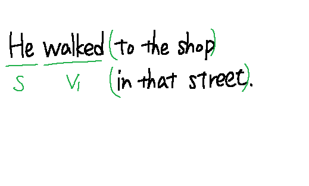
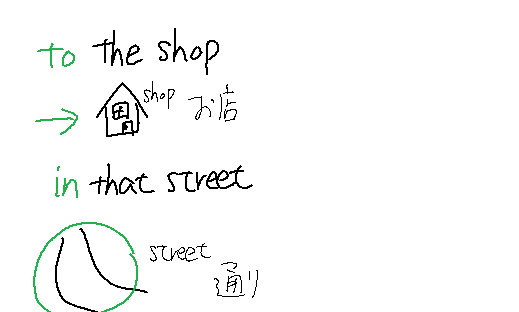

次の日本語を英語に直しなさない。
:彼は店まであの通りを歩いた。
:He walked to the shop in that street.
主語はheで、動詞はwalk。
walkのようなbe動詞以外の動詞を一般動詞という。
この場合は、walkedと変化してそれが「過去」に起きたことを示している。
to the shopは「店」に「方向」を向ける意味を加えている。
in that streetは「通り」の「中」という意味を加えている。
どちらも説明のための言葉で文の骨格は主語heと動詞walkにある。